V13220k versus V13120k and V120 Native160 cells unresized; use browser zoom100%. Exact synthetic material GT; independent real ISO100/AHD references are qualitative, never exact GT. Standing main train and cab mesh, both profiles/ROIs/JPEGs retained. Faint ADC displays share contrast20. Full20k input traces match exactly; single training seed, targeted development observations.
bark-gain1over8-iso6400-prior-comparison.png 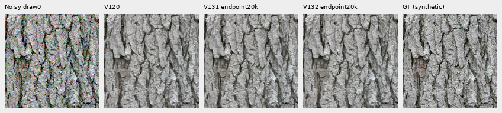
bark-gain1over8-iso6400-prior-triplet.png 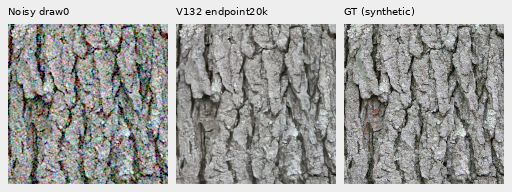
bark-gain1over8-iso12800-prior-comparison.png 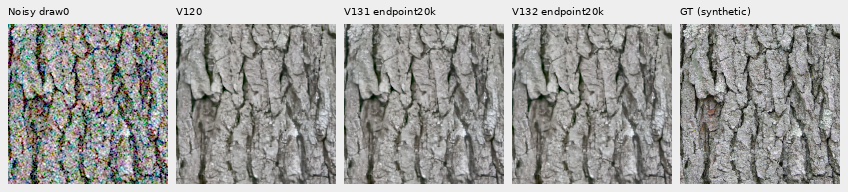
bark-gain1over8-iso12800-prior-triplet.png 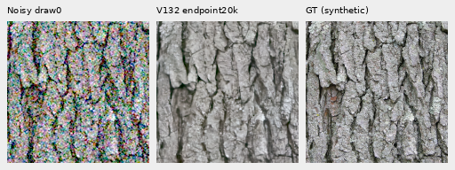
bark-gain1over32-iso6400-prior-comparison.png 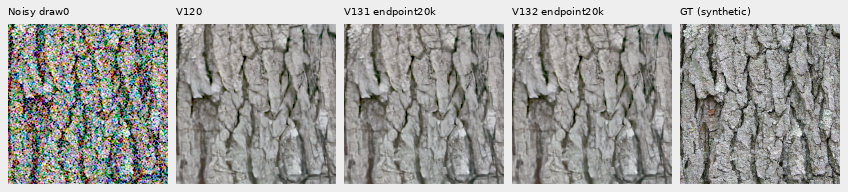
bark-gain1over32-iso6400-prior-triplet.png 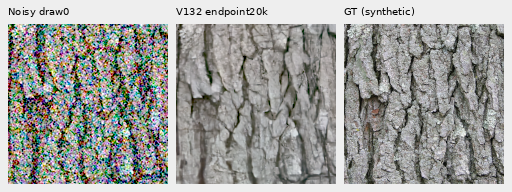
bark-gain1over32-iso12800-prior-comparison.png 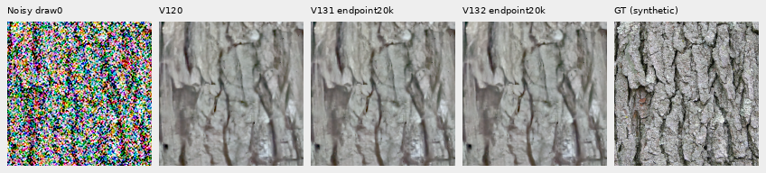
bark-gain1over32-iso12800-prior-triplet.png 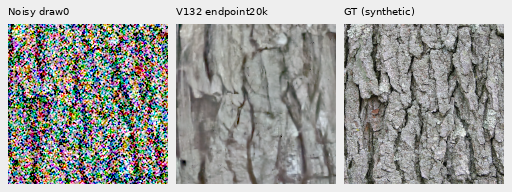
raccoon-fur-gain1over8-iso6400-prior-comparison.png 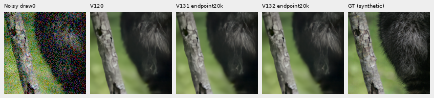
raccoon-fur-gain1over8-iso6400-prior-triplet.png 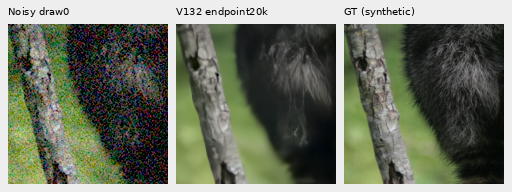
raccoon-fur-gain1over8-iso12800-prior-comparison.png 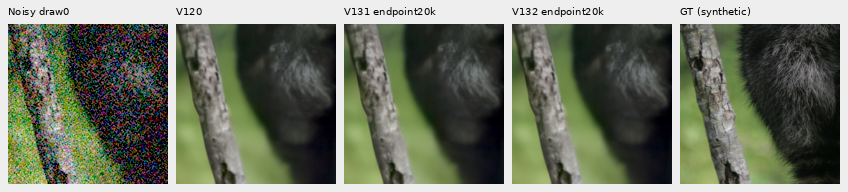
raccoon-fur-gain1over8-iso12800-prior-triplet.png 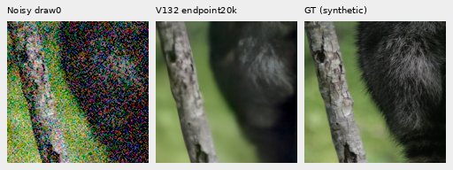
raccoon-fur-gain1over32-iso6400-prior-comparison.png 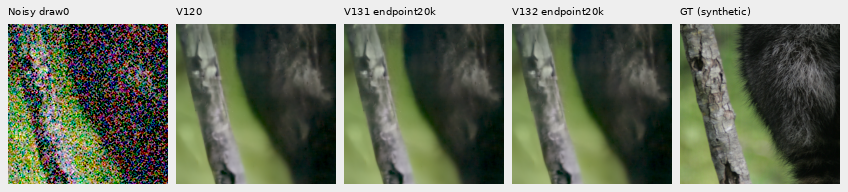
raccoon-fur-gain1over32-iso6400-prior-triplet.png 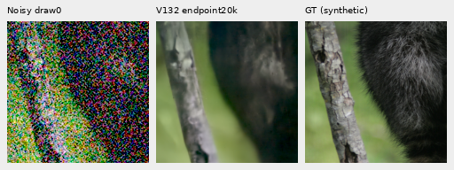
raccoon-fur-gain1over32-iso12800-prior-comparison.png 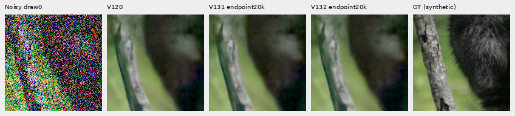
raccoon-fur-gain1over32-iso12800-prior-triplet.png 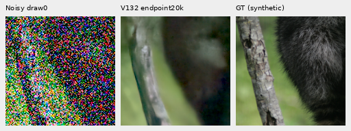
pixls-5002-fine-gain1over8-iso6400-prior-comparison.png 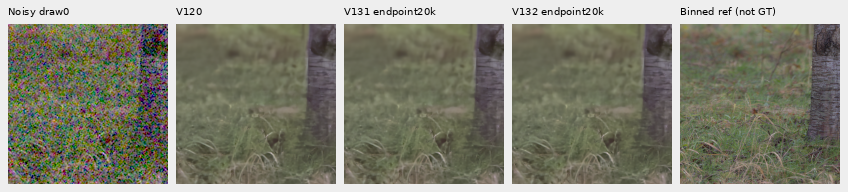
pixls-5002-fine-gain1over8-iso6400-prior-triplet.png 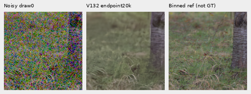
pixls-5002-fine-gain1over8-iso12800-prior-comparison.png 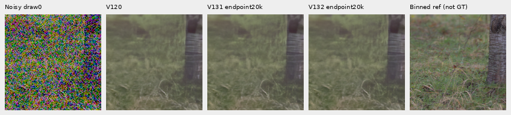
pixls-5002-fine-gain1over8-iso12800-prior-triplet.png 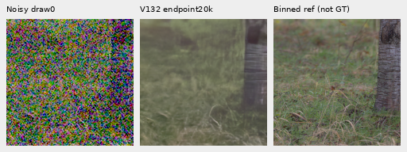
pixls-5002-fine-gain1over32-iso6400-prior-comparison.png 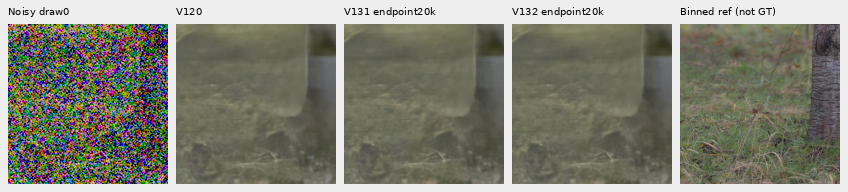
pixls-5002-fine-gain1over32-iso6400-prior-triplet.png 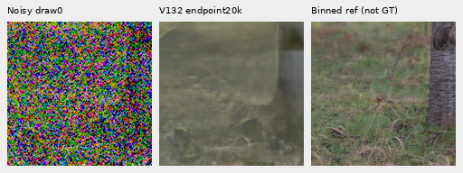
pixls-5002-fine-gain1over32-iso12800-prior-comparison.png 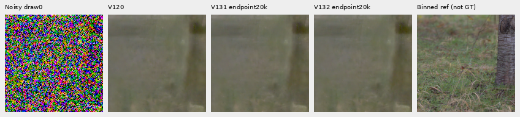
pixls-5002-fine-gain1over32-iso12800-prior-triplet.png 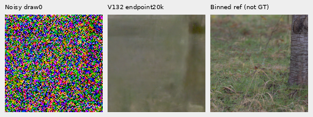
pixls-1951-field-gain1over8-iso6400-prior-comparison.png 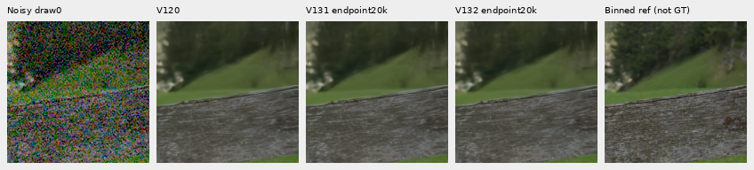
pixls-1951-field-gain1over8-iso6400-prior-triplet.png 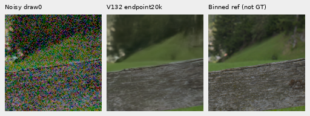
pixls-1951-field-gain1over8-iso12800-prior-comparison.png 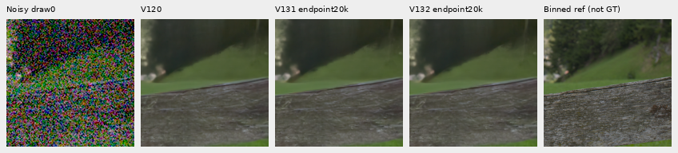
pixls-1951-field-gain1over8-iso12800-prior-triplet.png 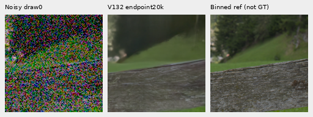
pixls-1951-field-gain1over32-iso6400-prior-comparison.png 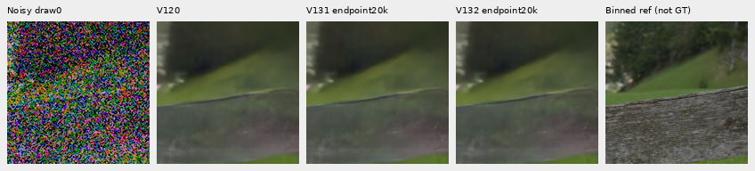
pixls-1951-field-gain1over32-iso6400-prior-triplet.png 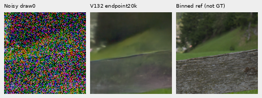
pixls-1951-field-gain1over32-iso12800-prior-comparison.png 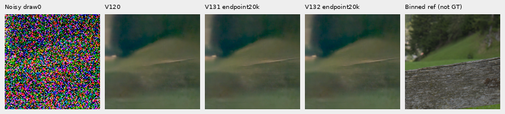
pixls-1951-field-gain1over32-iso12800-prior-triplet.png 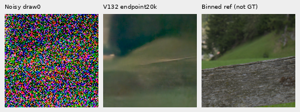
bark-comparison.png 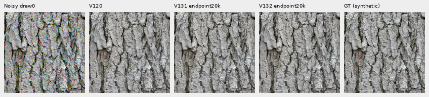
bark-triplet.png 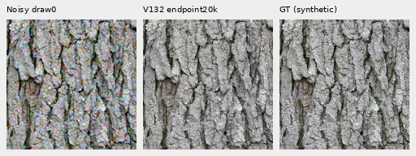
raccoon-fur-comparison.png 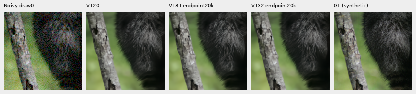
raccoon-fur-triplet.png 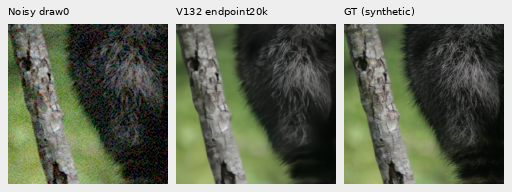
pixls-5002-fine-comparison.png 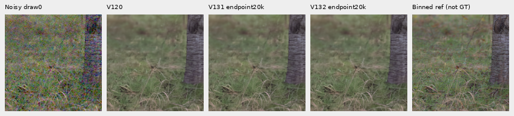
pixls-5002-fine-triplet.png 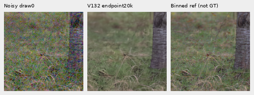
pixls-1951-field-comparison.png 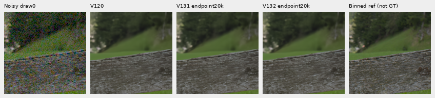
pixls-1951-field-triplet.png 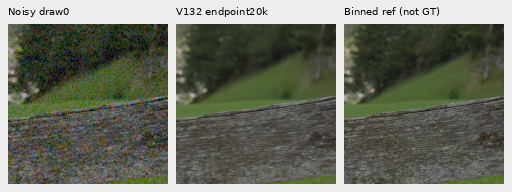
main-overcast-sky-comparison.png 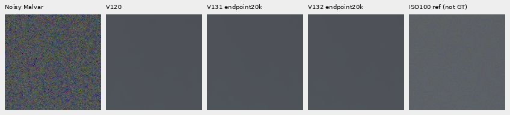
main-overcast-sky-triplet.png 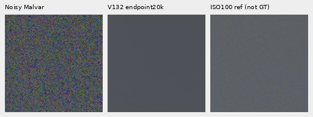
main-building-detail-comparison.png 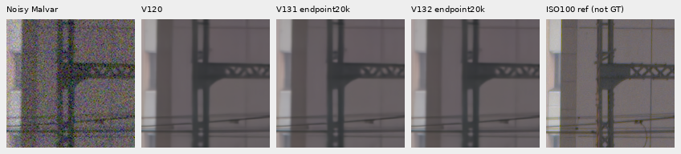
main-building-detail-triplet.png 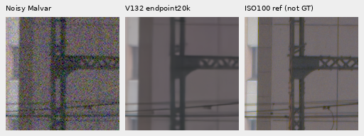
main-foliage-comparison.png 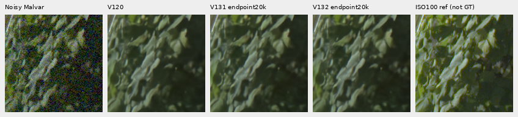
main-foliage-triplet.png 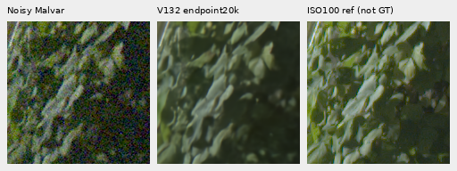
main-chain-link-fence-comparison.png 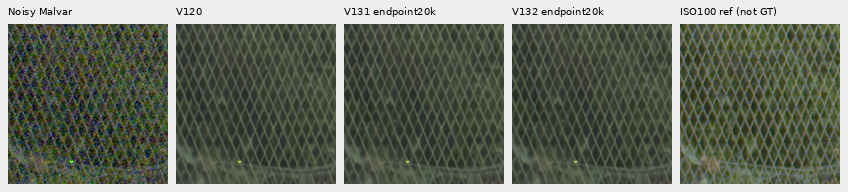
main-chain-link-fence-triplet.png 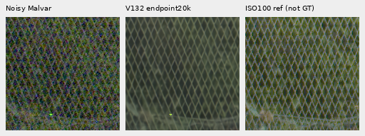
mesh-nominal-fine-green-mesh-left-comparison.png 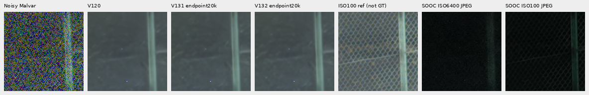
mesh-nominal-fine-green-mesh-left-triplet.png 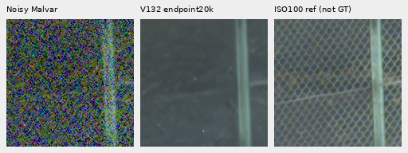
mesh-nominal-fine-green-mesh-right-comparison.png mesh-nominal-fine-green-mesh-right-triplet.png mesh-profile3879-fine-green-mesh-left-comparison.png mesh-profile3879-fine-green-mesh-left-triplet.png mesh-profile3879-fine-green-mesh-right-comparison.png mesh-profile3879-fine-green-mesh-right-triplet.png bark-contrast0p025-adc-comparison.png bark-contrast0p025-adc-triplet.png raccoon-fur-contrast0p025-adc-comparison.png raccoon-fur-contrast0p025-adc-triplet.png pixls-5002-fine-contrast0p025-adc-comparison.png pixls-5002-fine-contrast0p025-adc-triplet.png pixls-1951-field-contrast0p025-adc-comparison.png pixls-1951-field-contrast0p025-adc-triplet.png